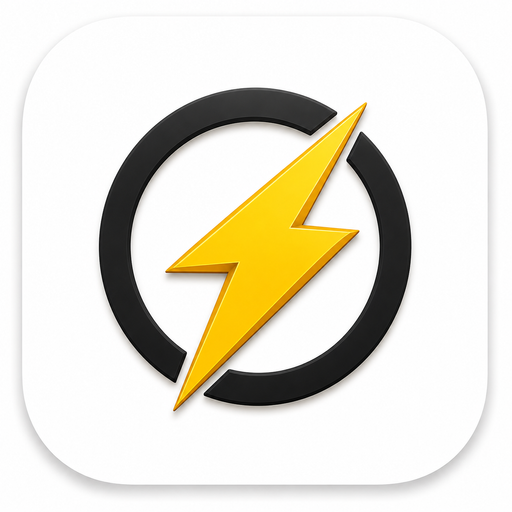
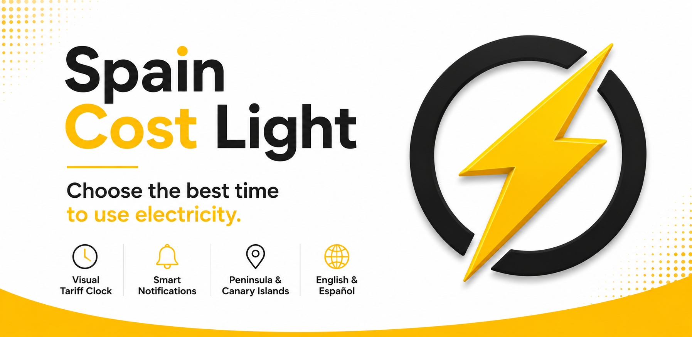
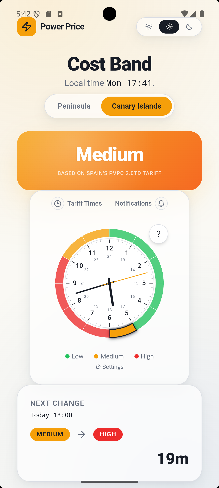
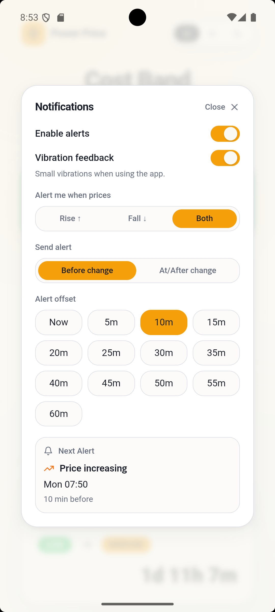
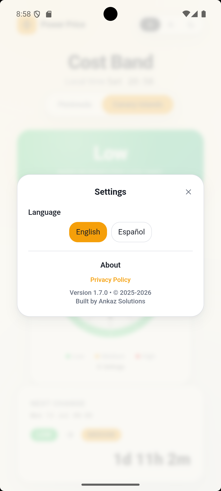
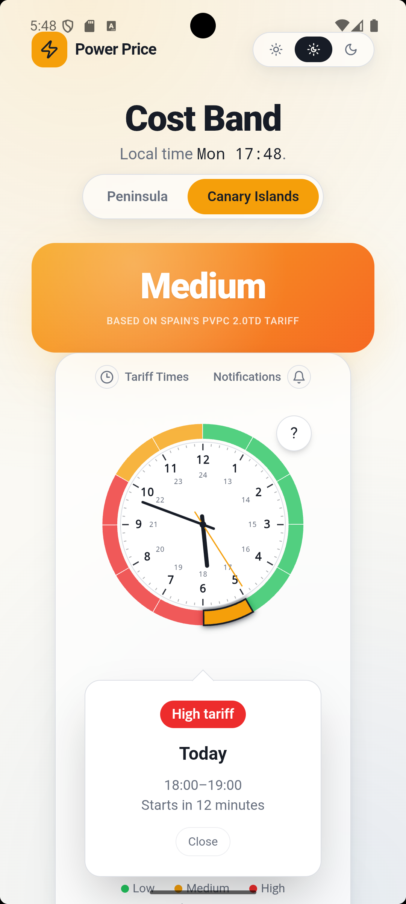
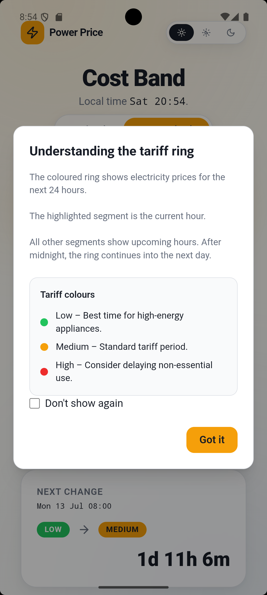

Comprensión inmediata
Identifica rápidamente el periodo tarifario actual.

Guía oficial de la tarifa eléctrica española
Spain Cost Light convierte la tarifa regulada de electricidad en España en una guía visual sencilla, utilizando colores para ayudarte a identificar rápidamente los periodos más económicos del día.

¿Por qué Spain Cost Light?
La tarifa regulada de electricidad en España cambia varias veces al día. Spain Cost Light elimina la complejidad mostrando los periodos oficiales mediante un sencillo sistema de colores para que puedas saber, de un vistazo, cuándo la electricidad es más barata.
Tanto si cargas un vehículo eléctrico, utilizas la lavadora o simplemente quieres reducir tu factura, la aplicación te ayuda a elegir el mejor momento para consumir electricidad.


La tarifa de hoy
El reloj tarifario muestra de forma visual si en este momento estás en periodo Valle, Llano o Punta, evitando tener que consultar tablas complicadas.
En cuestión de segundos sabrás si es un buen momento para poner la lavadora, cargar el coche eléctrico o utilizar cualquier electrodoméstico de alto consumo.
Recordatorios inteligentes
En lugar de comprobar continuamente la tarifa, Spain Cost Light puede avisarte antes de que cambie el periodo tarifario, ayudándote a aprovechar los momentos más económicos para consumir electricidad.
Las notificaciones son completamente opcionales y puedes activarlas o desactivarlas siempre que quieras.


Accesibilidad
Spain Cost Light ha sido creada para que la información importante sea fácil de entender a primera vista. La combinación de colores, la tipografía clara y un diseño limpio hacen que cualquier usuario pueda utilizar la aplicación con comodidad.
Previsión diaria
Spain Cost Light muestra los periodos tarifarios del día de una forma clara y fácil de interpretar, ayudándote a planificar el uso de la electricidad en los momentos más convenientes.
En lugar de consultar tablas complejas, dispones de una visión sencilla de la jornada para tomar decisiones más rápidas y prácticas.


Información visual
Toda la aplicación está diseñada para que la información importante se entienda visualmente antes incluso de leer los detalles. Los colores, el diseño y la presentación ayudan a interpretar rápidamente la tarifa eléctrica.
Identifica rápidamente el periodo tarifario actual.
Una interfaz sencilla que destaca únicamente la información importante.
Capturas de pantalla
Cada pantalla ha sido diseñada para que comprender la tarifa eléctrica española resulte rápido, sencillo e intuitivo.
Opiniones de usuarios
Spain Cost Light es una aplicación nueva. Estas opiniones son ejemplos que serán sustituidos por valoraciones reales de Google Play una vez publicada.
"Por fin entiendo la tarifa eléctrica sin tener que consultar tablas complicadas."
Próxima reseña de Google Play"Muy fácil de utilizar. Los colores hacen que todo resulte muy intuitivo."
Próxima reseña de Google Play"Los avisos me ayudan a recordar cuándo empieza el periodo más económico."
Próxima reseña de Google PlayDescárgala hoy
Descarga gratuitamente Spain Cost Light desde Google Play y consulta fácilmente los periodos oficiales de la tarifa regulada en España.
Preguntas frecuentes
Sí. Spain Cost Light es completamente gratuita.
Sí. Los periodos tarifarios continúan disponibles. Solo se necesita conexión para obtener información actualizada.
Sí. Las notificaciones son opcionales y pueden avisarte antes de que cambie el periodo tarifario.
No es necesario crear ninguna cuenta. Consulta la Política de privacidad para obtener más información.